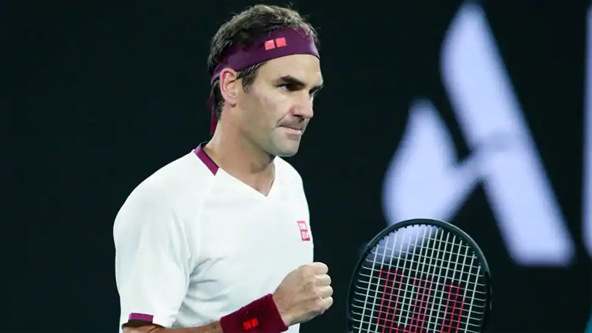

Federer holds the record of most major titles with 20 Grand Slam victories in his account and has also spent almost 310 weeks atop of the men's singles rankings of the ATP.
20-time Grand Slam champion Roger Federer has admitted that he is inching closer to his retirement from tennis, but stressed that he will miss the game a lot once his illustrious career comes to an end.
The Swiss tennis maestro, who is all set to turn 39 next month, continues to remain one of the top players of the ATP tour and is still capable of winning big tournaments.
World No.4 Federer's only appearance this year came at the Australian Open, where he made it to the semi-final of the Grand Slam tournament before losing to Serbian star Novak Djokovic in straight sets.
also holds the record of most major titles with 20 Grand Slam victories in his account and has also spent almost 310 weeks atop of the men's singles rankings of the Association for Tennis Professionals (ATP).He hs also bagged an Olympic gold medal in doubles (2008) and a silver in men's singles event of the prestigious games in 2012.
an impressive record in hand, Federer has now admitted that it will now be quite easier for him to bid adieu to the game.
In an exclusive interview to Die Zeit, Federer said that he is moving close to his retirement and, therefore, he wants to enjoy his time on court as long as he can continue to play the game.
"Retirement is getting closer and I will miss tennis so much. It would be easier for me to retire now, but I wanna give myself a chance to keep enjoying my time on court," tennisworldusa quoted Federer as saying to Zeit.
Following Australian Open, Federer deafeated world number two Rafael Nadal in a charity match, which was attended by over 50,000 fans in South Africa.
The Swiss tennis maestro then underwent an arthroscopic knee surgery in order to treat his damaged right knee.
Though Federer was hoping to make a return in time for the grass court season, he later confirmed that he would be making a comeback next season.
"A few weeks ago, having experienced a setback during my initial rehabilitation, I had to have an additional quick arthroscopic procedure on my right knee.Now, much like I did leading up to the 2017 season, I plan to take the necessary time to be 100% ready to play at my highest level. “I will be missing my fans and the tour dearly but, I will look forward to see everyone back on tour at the start of the 2021 season," Federer had said in a tweet.